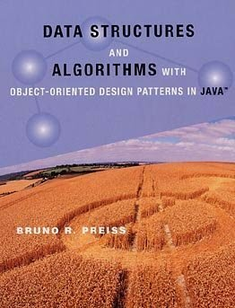

Data Structures and Algorithms with Object-Oriented Design Patterns in Java

Tác giả: Bruno R. Preiss
Tải về: http://www.brpreiss.com/books/opus5/public/front.pdf
Tóm tắt: Đây là cuốn sách rất tốt để hiểu về cấu trúc dữ liệu và giải thuật
của OOP trong ngôn ngữ Java. Với bất kì lập trình viên Java nào, việc phải
hiểu được ngôn ngữ Java là một điều kiện hiển nhiên.
Nguồn : Tài Liệu OnLine